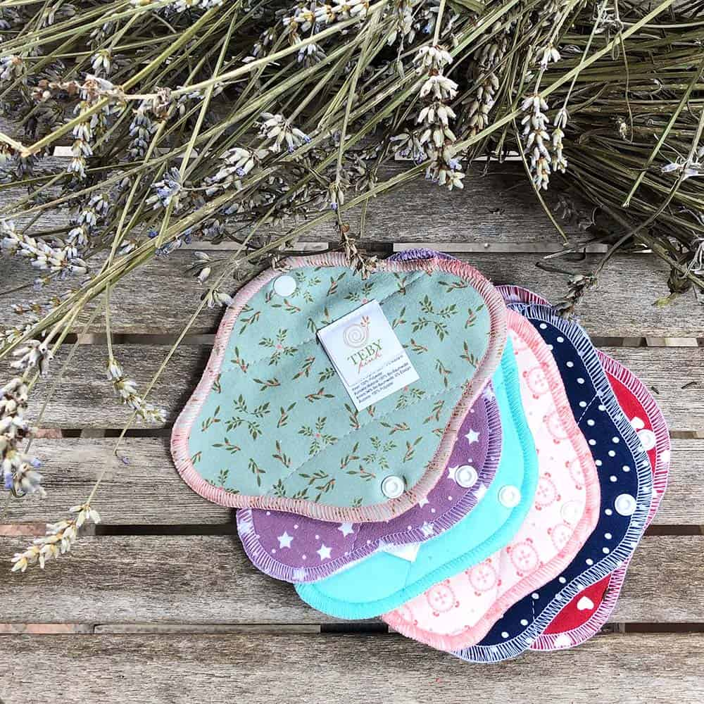
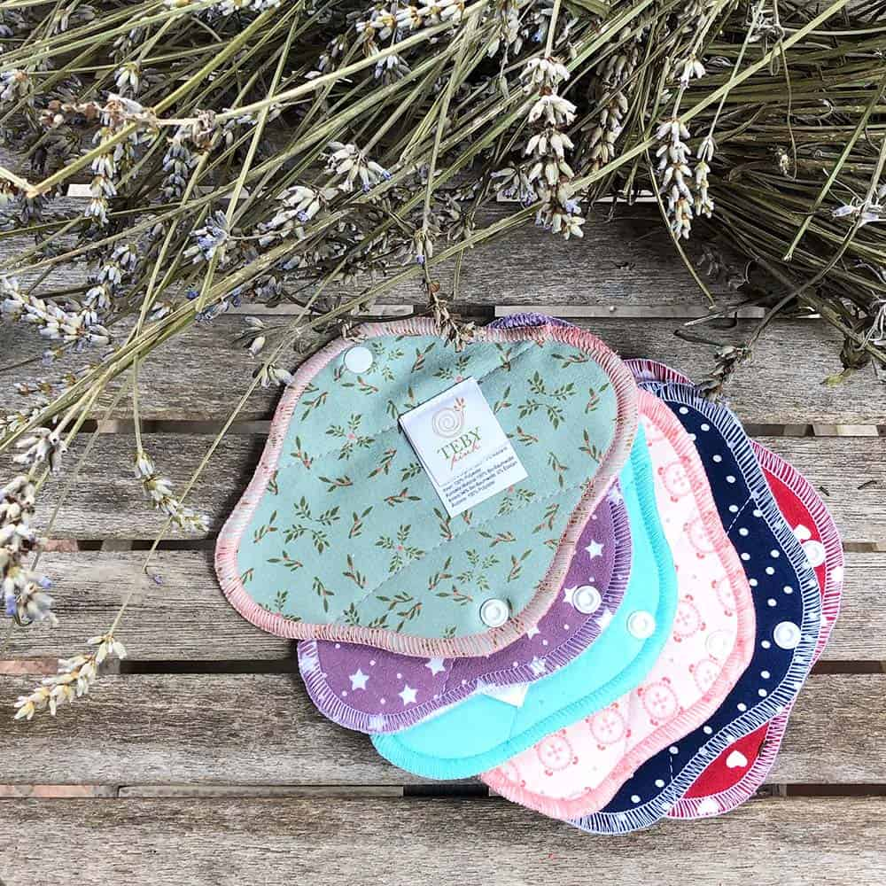
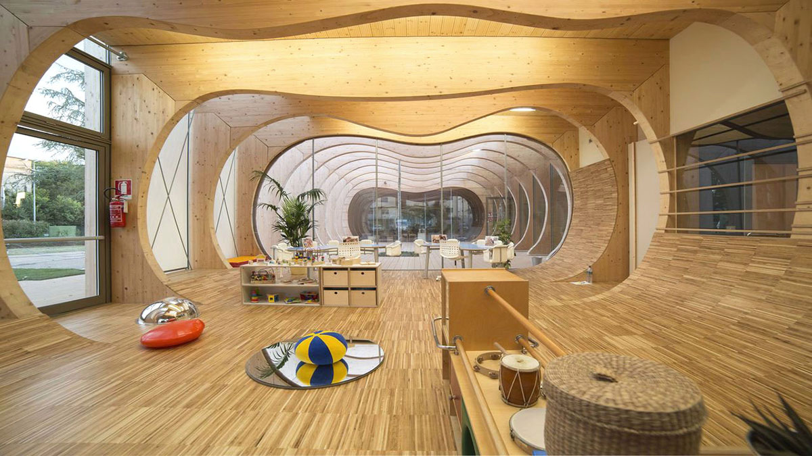
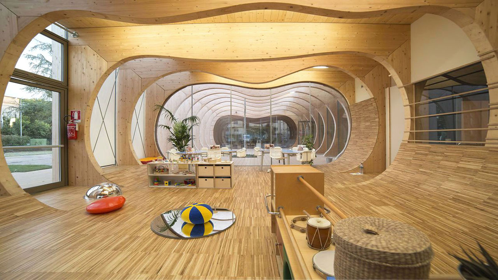

Siamo un sito informativo che cerca di aiutare il consumatore su come spendere i propri
fondi in
modo
ecologico, trovando delle alternative valide ai prodotti non ecosostenibili.
Andremo ad analizzare diverse categorie commerciali per capire e orientare al meglio l’utente.
L'Eco Design è un approccio innovativo nel campo del design
che si
concentra sulla creazione di prodotti sostenibili, riducendo al minimo il
loro impatto ambientale lungo l'intero ciclo di vita.
Questo significa progettare prodotti che siano rispettosi dell'ambiente, non solo durante la
produzione, ma anche durante l'uso e lo smaltimento.
Negli ultimi anni, sono stati realizzati moltissimi progetti di design sostenibile,
utilizzando materiali ecosostenibili e adottando pratiche di produzione a basso impatto
ambientale.
Sempre più aziende abbracciano i principi dell’ecodesign, proponendo prodotti sostenibili e
progetti
realizzati con materiali ecologici e sistemi produttivi orientati alla sostenibilità.
Ultimamente, la sensibilità delle persone nei confronti dell’ambiente è cresciuta così
tanto da
farne quasi una moda, e così nacque il Greenwashing.
Il Greenwashing è la tecnica di comunicazione o di marketing che tenta di
capitalizzare la
crescente domanda di prodotti e comportamenti a basso
impatto ambientale, accendendo i
riflettori su
azioni che in realtà non sono
autentiche, ma promosse al solo scopo di mostrarsi più
“sostenibili”.
Per evitare che le persone con buone intenzioni vengano prese in giro,
abbiamo fatto una
selezione
accurata di brand che secondo noi rispettano e
amano l’ambiente che li circonda.
 



 
